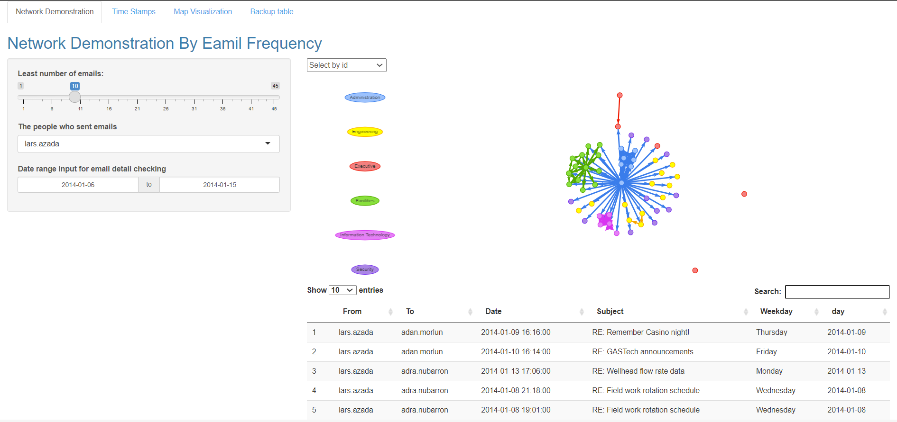
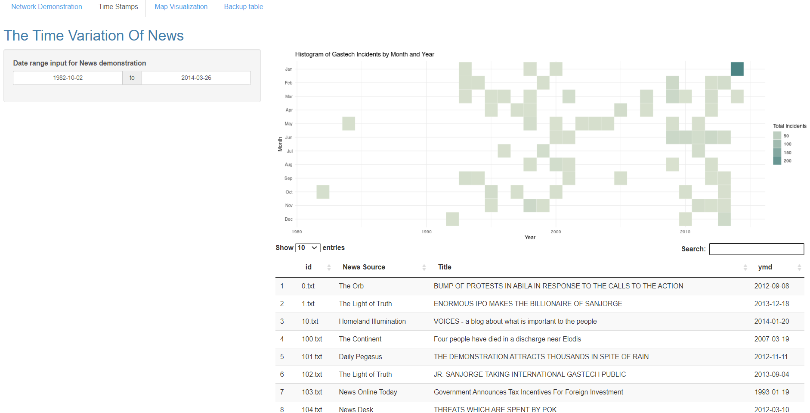
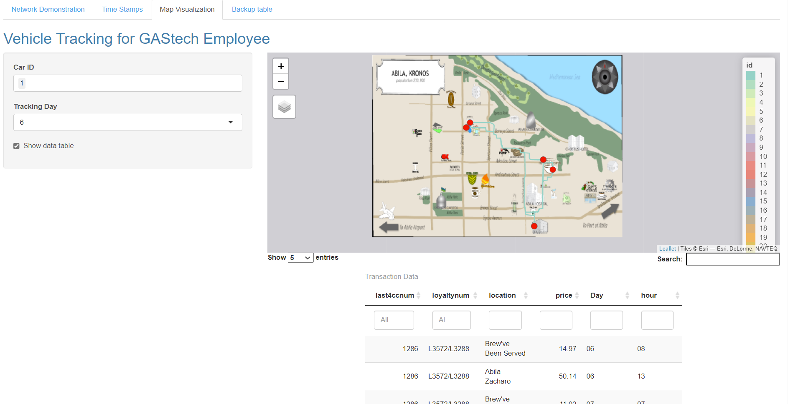
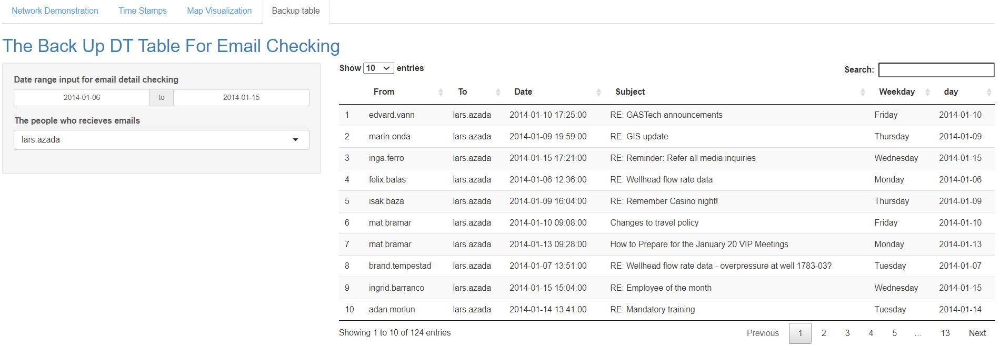

Poster for Vast Challenge 2021 Project
Li NAN1,  , Li Yueting2
, Li Yueting2
1 Singapore Management University
2 Singapore Management University
Introduction
This is the poster which provides an overview of our project which is based on Vast Challenge 2021.
In a fiction scenario,a gas-production company named Tethys-based GAStech has been operating a natural gas production site in the island country of Kronos and it has produced remarkable profits and developed strong relationships with the government of Kronos. However, GAStech has not been as successful in demonstrating environmental stewardship. And in January, 2014, the leaders of GAStech are celebrating their new-found fortune, but in the midst of this celebration, several employees of GAStech go missing. An organization known as the Protectors of Kronos (POK) is suspected in the disappearance, but things may not be what they seem.
Objectives
In order to reach the goal, interactive tools are developed to addresses the following requirements:
1)What is the frequency pattern pattern in news reported that related to the event? The answer is to visualize the pattern a heatmap can be adopted in order to see the timeline and when the event draws high media attention.
2)What is the network between employees? is there any suspicious connections between them? A network graph will be presented to demonstrate the connections between employees. Also, in order to find out the most frequent email connections, the number of email engagement will be treated as the weight of the graph, and by altering the weight people may clearly realize the level of connections of communities in GAStech company.
3)What is the suspicious pattern in company cars for employees’ personal and professional use? To utilize geographical visualization techniques to create car/truck routes of GAStech employees based on GPS dataset and also label parking points of car (parking more than 5 minutes) to dig out suspicious movement patterns.
4)How to utilize GPS data to match card owners and the debit/credit card owners? To create interactive transaction data table to track unusual credit/debit card transactions records of GAStech employees and compare them with car parking points shown in visualization map.
Approach
1) Network visualization The network visualization shows the connection between GAStech employees. The Department labels allow user to distinguish the department of nodes and the source of emails by different color. User can select the ID of interested person, and the un-correlated nodes will fade to grey. Also user may slide the mouse wheel to zoom in/zoom out to see the person name of each node, hover the mouse to the node can also got the result by reading the tooltip.
2) Heatmap visualization Heat map visualization to help user find the news details and the time variation of event heat.
3) Geospatial visualization
Geospatial visualization in this project is used to create an interactive route map which can track employee’s movement during Jan 6th and Jan 19th . For this visualization, we use multiple R packages. Tmap package offers a flexible, layer-based, and easy to use approach to create thematic maps, such as route map. Shiny package takes a fresh, interactive approach to telling the data story.
4) Interactive Data table visualization
To create an interactive transaction data table, DT package in R is used. The R package DT provides an R interface to the JavaScript library DataTables. In this project, loyalty dataset and credit/debit card dataset used by DT package is displayed as tables on HTML pages, and through argument settings, this data table provides filtering and sorting features.
Application Layout
For the shiny application, the final output will consist of four parts.
Network Demonstration: The Network Demonstration tab enable users to find out the email connections between each of GAStech employees. 
Time Stamps: This tab present the Heat map visualization and DT table can help user find the news details and the time variation of the event heat. 
Map Visualization: The geospatial visualization and interactive data table help the user to understand and match the relationship between card owners and car drivers, and to provide insights of unusual movements of car drivers to detect suspicious persons and noticeable activities. 
Backup table: This is the backup table for network visualization which is similar to the DT table in the first tab - Network Demonstration, the only difference is this graph can be used to find the people who receive emails. 
Future Work
This paper set out the development of a web application targeted at providing an interactive visualization tool to help minimize time to have a thorough understanding of person’s social connection and background (e.g. car owner/credit card owner/daily movement/daily spend) and detect suspicious patterns.
Also By observing the timeline, it helps people quickly locate the time point of the incident for interactive comparison. And the Network visualization demonstrate the personal & official connections between people, which enable analysts to quickly understand a person’s social network and identify possible suspects and insiders.
However, shiny app also have some demerits that needs to be improved in the future.
For application:
- Consider add “select all” action button. This will help to detect each day all the driver’s movement.
- Instead of using Car ID as input, consider using Employee title and Employee department as input, which can help to find relationship between different departments.
- Consider Add starting time and end time in the tooltip, which can be more helpful for detecting suspicious gathering groups.
- There are only nodes that represent GAStech employees in network, however, there are more than emails within GAStech company provided in the data set, it might be useful to also include nodes outside the company for a vaster social connection evaluation
- In order to investigate the time distribution of email sending, an comparison graph that gives the email activity related to weekday might be helpful
For future direction:
- Needs to develop more visualizations to summarize employee’s gathering spots to identify their private relationships.
- Needs to combine products of social networking visualization and route map visualization to find more insights, like creating a dashboard to combine.